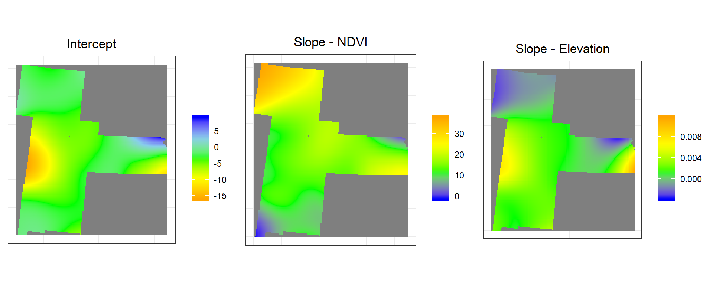
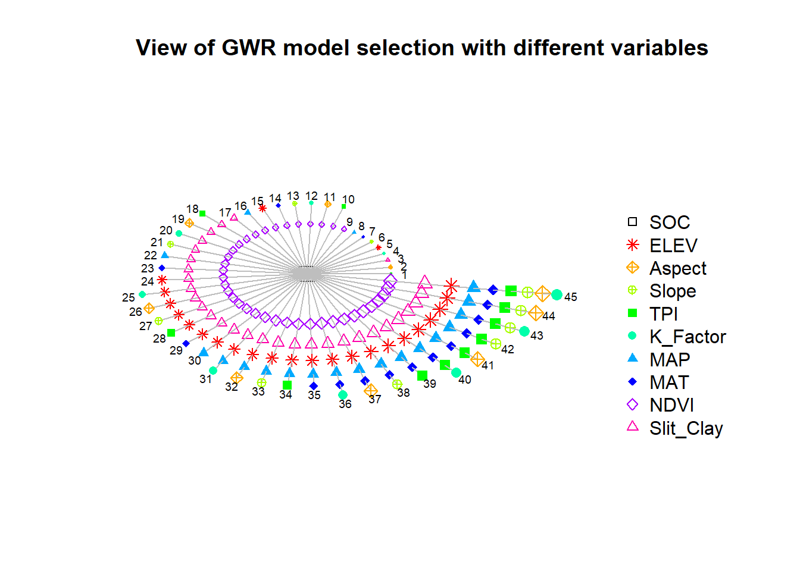
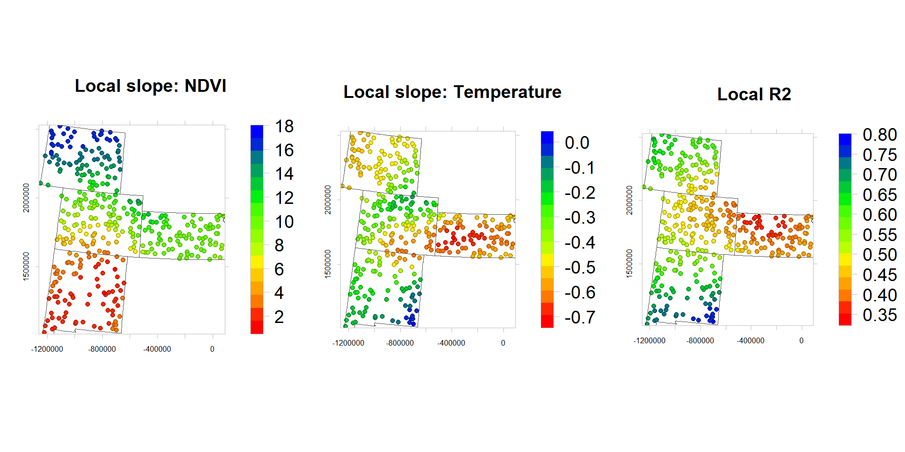

Geographically Weighted Ordinary Regression
In this exercise we will apply a general form GWR to predict Soil Organic C. We will use two covariates, elevation and NDVI to fit GWR OLS model. The soil organic carbon data (train and test data set) could be found here.
Load packages
library(GWmodel) ## GW models
library(spgwr) ## GW models
library(spdep) ## Spatial autocorrelation
library(gstat) ## Geostatistics
library(RColorBrewer) ## Visualization
library(classInt) ## Class intervals
library(raster) ## spatial data
library(gridExtra) # Multiple plot
library(ggplot2) # plot
library(latticeExtra) # advance ploting function
library(RStoolbox) # advance raster ploting function
#library(SpatialML) # Geographicall Weigted Random ForestLoad data
# Define data folder
dataFolder<-"D:\\Dropbox\\Spatial Data Analysis and Processing in R\\Data_OLS\\"train<-read.csv(paste0(dataFolder,"train_data.csv"), header= TRUE)
state<-shapefile(paste0(dataFolder,"GP_STATE.shp"))
grid<-read.csv(paste0(dataFolder, "GP_prediction_grid_data.csv"), header= TRUE) xy <- train[,c(8:9)]
df<-train[,c(8:11,18)]
mf<-train[,c(10:11,18)]
SPDF<-SpatialPointsDataFrame(coords = xy, data = mf)GWR with spgwr package
We will use gwr.sel() function in spgwr packageto find a bandwidth for a given geographically weighted regression by optimizing a selected function. For cross-validation, this scores the root mean square prediction error for the geographically weighted regressions, choosing the bandwidth minimizing this quantity
Bandwith
bwG <- gwr.sel(SOC ~ ELEV +NDVI,
data = SPDF,
gweight = gwr.Gauss,
verbose = FALSE)
bwG## [1] 168261.2Then, well use gwr() function to implement the basic geographically weighted regression approach to exploring spatial non-stationarity for given global bandwidth and chosen weighting scheme.
Fit GWR model
gwrG <- gwr(SOC ~ ELEV +NDVI,
data = SPDF,
bandwidth = bwG,
gweight = gwr.Gauss,
hatmatrix = TRUE)
gwrG## Call:
## gwr(formula = SOC ~ ELEV + NDVI, data = SPDF, bandwidth = bwG,
## gweight = gwr.Gauss, hatmatrix = TRUE)
## Kernel function: gwr.Gauss
## Fixed bandwidth: 168261.2
## Summary of GWR coefficient estimates at data points:
## Min. 1st Qu. Median 3rd Qu. Max.
## X.Intercept. -1.5269e+01 -5.0132e+00 -3.3765e+00 -1.9694e+00 8.3425e+00
## ELEV -2.9072e-03 7.9294e-05 1.5306e-03 2.5182e-03 8.4633e-03
## NDVI -7.6028e-01 1.2401e+01 1.5900e+01 1.9333e+01 3.7073e+01
## Global
## X.Intercept. -4.0684
## ELEV 0.0013
## NDVI 18.7817
## Number of data points: 368
## Effective number of parameters (residual: 2traceS - traceS'S): 26.93114
## Effective degrees of freedom (residual: 2traceS - traceS'S): 341.0689
## Sigma (residual: 2traceS - traceS'S): 3.769681
## Effective number of parameters (model: traceS): 19.62378
## Effective degrees of freedom (model: traceS): 348.3762
## Sigma (model: traceS): 3.729936
## Sigma (ML): 3.629123
## AICc (GWR p. 61, eq 2.33; p. 96, eq. 4.21): 2036.859
## AIC (GWR p. 96, eq. 4.22): 2012.66
## Residual sum of squares: 4846.757
## Quasi-global R2: 0.4846599Extract and plot coefficients
df$NDVI_slope<-gwrG$SDF$NDVI # Slope NDVI
df$ELEV_slope<-gwrG$SDF$ELEV # Slope Elevation
df$R2<-gwrG$SDF$localR2 # Local R2rgb.palette.col <- colorRampPalette(c("red","yellow", "green", "blue"),space = "rgb")
p1<-levelplot(NDVI_slope~x+y, df,cex=0.6,
aspect = "iso",main= "Local slope: NDVI",
xlab="", ylab="",
scales=list(y=list(draw=T,cex=0.5,rot=90, tck= 0.5),x=list(draw=T, cex=0.5,tck= 0.6)),
par.settings=list(axis.line=list(col="grey",lwd=0.5)),
col.regions=rgb.palette.col (20),
colorkey=list(space="right",width=1.2,labels=list(cex=1.2)),
panel = function(...) {
panel.levelplot.points(...)
sp.polygons(state,lty=1,lwd=0.5,col="grey30")
})
p2<-levelplot(ELEV_slope~x+y, df,cex=0.6,
aspect = "iso",main= "Local slope: Elevation",
xlab="", ylab="",
scales=list(y=list(draw=T,cex=0.5,rot=90, tck= 0.5),x=list(draw=T, cex=0.5,tck= 0.6)),
par.settings=list(axis.line=list(col="grey",lwd=0.5)),
col.regions=rgb.palette.col (20),
colorkey=list(space="right",width=1.2,labels=list(cex=1.2)),
panel = function(...) {
panel.levelplot.points(...)
sp.polygons(state,lty=1,lwd=0.5,col="grey30")
})
p3<-levelplot(R2~x+y, df,cex=0.6,
aspect = "iso",main= "Local R2",
xlab="", ylab="",
scales=list(y=list(draw=T,cex=0.5,rot=90, tck= 0.5),x=list(draw=T, cex=0.5,tck= 0.6)),
par.settings=list(axis.line=list(col="grey",lwd=0.5)),
col.regions=rgb.palette.col (20),
colorkey=list(space="right",width=1.2,labels=list(cex=1.2)),
panel = function(...) {
panel.levelplot.points(...)
sp.polygons(state,lty=1,lwd=0.5,col="grey30")
}) grid.arrange(p1, p2,p3, ncol=3)
Prediction at grid location
We can use use fit.points as additional argument to predict SOC at grid locations.
coordinates(grid) = ~x+y
g.soc <- gwr(SOC ~ ELEV +NDVI,
data = SPDF,
bandwidth = bwG,
fit.points=grid[, 2:3])
g.soc## Call:
## gwr(formula = SOC ~ ELEV + NDVI, data = SPDF, bandwidth = bwG,
## fit.points = grid[, 2:3])
## Kernel function: gwr.Gauss
## Fixed bandwidth: 168261.2
## Fit points: 10674
## Summary of GWR coefficient estimates at fit points:
## Min. 1st Qu. Median 3rd Qu. Max.
## X.Intercept. -1.5923e+01 -4.9354e+00 -3.3336e+00 -2.0286e+00 9.1539
## ELEV -3.6870e-03 2.0298e-04 1.6168e-03 2.4894e-03 0.0116
## NDVI -1.3422e+00 1.1993e+01 1.5231e+01 1.8892e+01 37.6824Extract coefficients
grid$NDVI_slope<-g.soc$SDF$NDVI # Slope NDVI
grid$ELEV_slope<-g.soc$SDF$ELEV # Slope Elevation
grid$Intercept<-g.soc$SDF$'(Intercept)' # Local InterceptConvert to raster
NDVI.slope<-rasterFromXYZ(as.data.frame(grid)[, c("x", "y", "NDVI_slope")])
ELEV.slope<-rasterFromXYZ(as.data.frame(grid)[, c("x", "y", "ELEV_slope")])
Intercept<-rasterFromXYZ(as.data.frame(grid)[, c("x", "y", "Intercept")])p1<-ggR(Intercept, geom_raster = TRUE) +
scale_fill_gradientn("", colours = c("orange", "yellow", "green", "sky blue","blue"))+
theme_bw()+
theme(axis.title.x=element_blank(),
axis.text.x=element_blank(),
axis.ticks.x=element_blank(),
axis.title.y=element_blank(),
axis.text.y=element_blank(),
axis.ticks.y=element_blank())+
ggtitle("Intercept")+
theme(plot.title = element_text(hjust = 0.5))
p2<-ggR(NDVI.slope, geom_raster = TRUE) +
scale_fill_gradientn("", colours = c("blue", "green","yellow", "orange"))+
theme_bw()+
theme(axis.title.x=element_blank(),
axis.text.x=element_blank(),
axis.ticks.x=element_blank(),
axis.title.y=element_blank(),
axis.text.y=element_blank(),
axis.ticks.y=element_blank())+
ggtitle("Slope - NDVI")+
theme(plot.title = element_text(hjust = 0.5))
p3<-ggR(ELEV.slope, geom_raster = TRUE) +
scale_fill_gradientn("", colours = c("blue", "green","yellow", "orange"))+
theme_bw()+
theme(axis.title.x=element_blank(),
axis.text.x=element_blank(),
axis.ticks.x=element_blank(),
axis.title.y=element_blank(),
axis.text.y=element_blank(),
axis.ticks.y=element_blank())+
ggtitle("Slope - Elevation")+
theme(plot.title = element_text(hjust = 0.5))
grid.arrange(p1,p2,p3, ncol = 3) # Multiplot 
GWR with GWModel package
In GWModel package allow to select a subset of independent variable with a pseudo stepwise procedure in a forward direction.
xy <- train[,c(8:9)]
df.1<-train[,c(8:19)]
mf.1<-train[,c(10:19)]
SPDF.1<-SpatialPointsDataFrame(coords = xy, data = mf.1)
names(SPDF.1)## [1] "SOC" "ELEV" "Aspect" "Slope" "TPI"
## [6] "K_Factor" "MAP" "MAT" "NDVI" "Slit_Clay"The function model.selection.gwr(), whose AICc outputs are sorted using model.sort.gwr and then inputted to model.view.gwr to provide a useful vi-sualization of the AICc data.
RESPONSE <- "SOC"
PREDICTORS <- c("ELEV", "Aspect","Slope","TPI","K_Factor","MAP","MAT","NDVI", "Slit_Clay")
model.sel <- model.selection.gwr(RESPONSE, PREDICTORS,
data = SPDF.1,
kernel = "bisquare",
adaptive = TRUE,
bw = 231)sorted.models <- model.sort.gwr(model.sel, numVars = length(PREDICTORS),ruler.vector = model.sel[[2]][,2])
model.list <- sorted.models[[1]]
model.view.gwr(RESPONSE, PREDICTORS, model.list = model.list)
Figure below presents a circle view of the 45 GW regressions (numbered 1 to 45) that result from stepwise procedure. Here the dependent variable is located in the centre of the chart and the independent variables are represented as nodes differentiated by shapes and colors.
plot(sorted.models[[2]][,2], col = "black", pch = 20, lty = 5,
main = "Alternative view of GWR model selection procedure",
ylab = "AICc", xlab = "Model number", type = "b")
Figure displays the corresponding AICc values from the same as of circle figure. The two graphs work together, explaining model performance when more and more variables are introduced. Clearly, AICc values continue to fall until all independent variables are included.
Bandwith
gwr.bw <- bw.gwr(SOC~ELEV+Aspect+Slope+TPI+K_Factor+MAP+MAT+NDVI+Slit_Clay,
data = SPDF.1,
approach = "AICc",
kernel = "bisquare",
adaptive = TRUE)## Adaptive bandwidth (number of nearest neighbours): 235 AICc value: 2041.217
## Adaptive bandwidth (number of nearest neighbours): 153 AICc value: 2048.422
## Adaptive bandwidth (number of nearest neighbours): 286 AICc value: 2042.04
## Adaptive bandwidth (number of nearest neighbours): 203 AICc value: 2041.382
## Adaptive bandwidth (number of nearest neighbours): 254 AICc value: 2041.324
## Adaptive bandwidth (number of nearest neighbours): 222 AICc value: 2041.512
## Adaptive bandwidth (number of nearest neighbours): 241 AICc value: 2041.294
## Adaptive bandwidth (number of nearest neighbours): 229 AICc value: 2041.29
## Adaptive bandwidth (number of nearest neighbours): 236 AICc value: 2041.291
## Adaptive bandwidth (number of nearest neighbours): 231 AICc value: 2041.213
## Adaptive bandwidth (number of nearest neighbours): 232 AICc value: 2041.292
## Adaptive bandwidth (number of nearest neighbours): 234 AICc value: 2041.295
## Adaptive bandwidth (number of nearest neighbours): 232 AICc value: 2041.292
## Adaptive bandwidth (number of nearest neighbours): 233 AICc value: 2041.257
## Adaptive bandwidth (number of nearest neighbours): 232 AICc value: 2041.292
## Adaptive bandwidth (number of nearest neighbours): 232 AICc value: 2041.292
## Adaptive bandwidth (number of nearest neighbours): 231 AICc value: 2041.213gwr.bw## [1] 231The optimal bandwidth is found at N = 231
Fit GWR model
gwr.res <- gwr.basic(SOC~ELEV+Aspect+Slope+TPI+K_Factor+MAP+MAT+NDVI+Slit_Clay,
data = SPDF.1,
bw = gwr.bw,
kernel = "bisquare",
adaptive = TRUE,
F123.test = TRUE)## Warning in pf(F2, F2.DF[1], F2.DF[2], lower.tail = FALSE): NaNs producedgwr.res## ***********************************************************************
## * Package GWmodel *
## ***********************************************************************
## Program starts at: 2020-01-08 10:03:45
## Call:
## gwr.basic(formula = SOC ~ ELEV + Aspect + Slope + TPI + K_Factor +
## MAP + MAT + NDVI + Slit_Clay, data = SPDF.1, bw = gwr.bw,
## kernel = "bisquare", adaptive = TRUE, F123.test = TRUE)
##
## Dependent (y) variable: SOC
## Independent variables: ELEV Aspect Slope TPI K_Factor MAP MAT NDVI Slit_Clay
## Number of data points: 368
## ***********************************************************************
## * Results of Global Regression *
## ***********************************************************************
##
## Call:
## lm(formula = formula, data = data)
##
## Residuals:
## Min 1Q Median 3Q Max
## -13.0688 -2.0901 -0.4861 1.4701 17.5191
##
## Coefficients:
## Estimate Std. Error t value Pr(>|t|)
## (Intercept) 0.9620569 2.9314299 0.328 0.742962
## ELEV -0.0001908 0.0006758 -0.282 0.777880
## Aspect 0.0015092 0.0090800 0.166 0.868083
## Slope 0.1405423 0.0729235 1.927 0.054739 .
## TPI 0.0250793 0.0561447 0.447 0.655368
## K_Factor -2.8115398 3.4926100 -0.805 0.421356
## MAP 0.0048705 0.0019738 2.468 0.014071 *
## MAT -0.3014147 0.0980634 -3.074 0.002277 **
## NDVI 8.9768177 2.4390791 3.680 0.000269 ***
## Slit_Clay 0.0324410 0.0167687 1.935 0.053824 .
##
## ---Significance stars
## Signif. codes: 0 '***' 0.001 '**' 0.01 '*' 0.05 '.' 0.1 ' ' 1
## Residual standard error: 3.847 on 358 degrees of freedom
## Multiple R-squared: 0.4366
## Adjusted R-squared: 0.4224
## F-statistic: 30.82 on 9 and 358 DF, p-value: < 2.2e-16
## ***Extra Diagnostic information
## Residual sum of squares: 5298.888
## Sigma(hat): 3.804975
## AIC: 2047.857
## AICc: 2048.599
## ***********************************************************************
## * Results of Geographically Weighted Regression *
## ***********************************************************************
##
## *********************Model calibration information*********************
## Kernel function: bisquare
## Adaptive bandwidth: 231 (number of nearest neighbours)
## Regression points: the same locations as observations are used.
## Distance metric: Euclidean distance metric is used.
##
## ****************Summary of GWR coefficient estimates:******************
## Min. 1st Qu. Median 3rd Qu. Max.
## Intercept -3.44262655 -0.60164873 0.97765472 2.01764374 5.2844
## ELEV -0.00298087 -0.00095504 0.00037826 0.00069260 0.0015
## Aspect -0.01742220 -0.00177237 0.00559962 0.01043209 0.0167
## Slope -0.12830677 -0.02740338 0.01353384 0.09438182 0.1526
## TPI -0.11229518 -0.00603647 0.03383873 0.18720680 0.2984
## K_Factor -8.35475064 -5.53848256 -3.76182795 0.99261921 10.2079
## MAP 0.00065770 0.00463274 0.00617414 0.01181778 0.0154
## MAT -0.69521018 -0.53935868 -0.45411911 -0.29010281 -0.0065
## NDVI 1.56293955 5.10399371 9.41043826 12.38995543 16.9790
## Slit_Clay -0.05878864 0.01178128 0.03674368 0.04637966 0.0617
## ************************Diagnostic information*************************
## Number of data points: 368
## Effective number of parameters (2trace(S) - trace(S'S)): 36.82948
## Effective degrees of freedom (n-2trace(S) + trace(S'S)): 331.1705
## AICc (GWR book, Fotheringham, et al. 2002, p. 61, eq 2.33): 2041.213
## AIC (GWR book, Fotheringham, et al. 2002,GWR p. 96, eq. 4.22): 2004.854
## Residual sum of squares: 4627.128
## R-square value: 0.5080123
## Adjusted R-square value: 0.4531327
## ******************F test results of GWR calibration********************
## ---F1 test (Leung et al. 2000)
## F1 statistic Numerator DF Denominator DF Pr(>)
## 0.94397 Inf 358 0.2108
## ---F2 test (Leung et al. 2000)
## F2 statistic Numerator DF Denominator DF Pr(>)
## 1.6916 -2.3652 358 NA
## ---F3 test (Leung et al. 2000)
## F3 statistic Numerator DF Denominator DF Pr(>)
## Intercept 0.14681 158.28842 Inf 1.0000000
## ELEV 1.12412 172.73077 Inf 0.1262193
## Aspect 0.59043 123.24461 Inf 0.9999146
## Slope 0.41990 96.88100 Inf 0.9999999
## TPI 2.85866 39.75585 Inf 4.851e-09 ***
## K_Factor 1.16978 109.24648 Inf 0.1084885
## MAP 2.09811 78.40929 Inf 4.626e-08 ***
## MAT 0.62273 158.20877 Inf 0.9999447
## NDVI 1.99276 60.04008 Inf 7.666e-06 ***
## Slit_Clay 1.48229 148.88508 Inf 0.0001206 ***
## ---F4 test (GWR book p92)
## F4 statistic Numerator DF Denominator DF Pr(>)
## 0.87323 331.17052 358 0.105
##
## ---Significance stars
## Signif. codes: 0 '***' 0.001 '**' 0.01 '*' 0.05 '.' 0.1 ' ' 1
## ***********************************************************************
## Program stops at: 2020-01-08 10:03:58Extract and plot coefficients
df.1$NDVI_slope<-gwr.res$SDF$NDVI # Slope NDVI
df.1$MAT_slope<-gwr.res$SDF$MAT # Slope Elevation
df.1$R2<-gwr.res$SDF$Local_R2 # Local R2rgb.palette.col <- colorRampPalette(c("red","yellow", "green", "blue"),space = "rgb")
p1.1<-levelplot(NDVI_slope~x+y, df.1,cex=0.6,
aspect = "iso",main= "Local slope: NDVI",
xlab="", ylab="",
scales=list(y=list(draw=T,cex=0.5,rot=90, tck= 0.5),x=list(draw=T, cex=0.5,tck= 0.6)),
par.settings=list(axis.line=list(col="grey",lwd=0.5)),
col.regions=rgb.palette.col (20),
colorkey=list(space="right",width=1.2,labels=list(cex=1.2)),
panel = function(...) {
panel.levelplot.points(...)
sp.polygons(state,lty=1,lwd=0.5,col="grey30")
})
p2.1<-levelplot(MAT_slope~x+y, df.1,cex=0.6,
aspect = "iso",main= "Local slope: Temperature",
xlab="", ylab="",
scales=list(y=list(draw=T,cex=0.5,rot=90, tck= 0.5),x=list(draw=T, cex=0.5,tck= 0.6)),
par.settings=list(axis.line=list(col="grey",lwd=0.5)),
col.regions=rgb.palette.col (20),
colorkey=list(space="right",width=1.2,labels=list(cex=1.2)),
panel = function(...) {
panel.levelplot.points(...)
sp.polygons(state,lty=1,lwd=0.5,col="grey30")
})
p3.1<-levelplot(R2~x+y, df.1,cex=0.6,
aspect = "iso",main= "Local R2",
xlab="", ylab="",
scales=list(y=list(draw=T,cex=0.5,rot=90, tck= 0.5),x=list(draw=T, cex=0.5,tck= 0.6)),
par.settings=list(axis.line=list(col="grey",lwd=0.5)),
col.regions=rgb.palette.col (20),
colorkey=list(space="right",width=1.2,labels=list(cex=1.2)),
panel = function(...) {
panel.levelplot.points(...)
sp.polygons(state,lty=1,lwd=0.5,col="grey30")
}) grid.arrange(p1.1, p2.1,p3.1, ncol=3)
rm(list = ls())